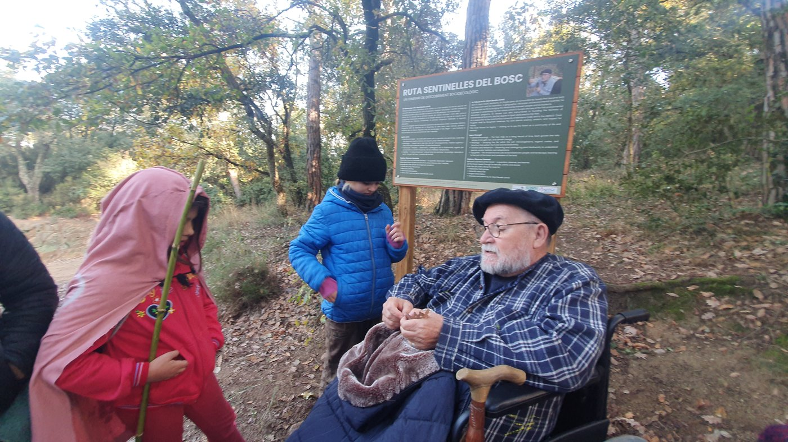
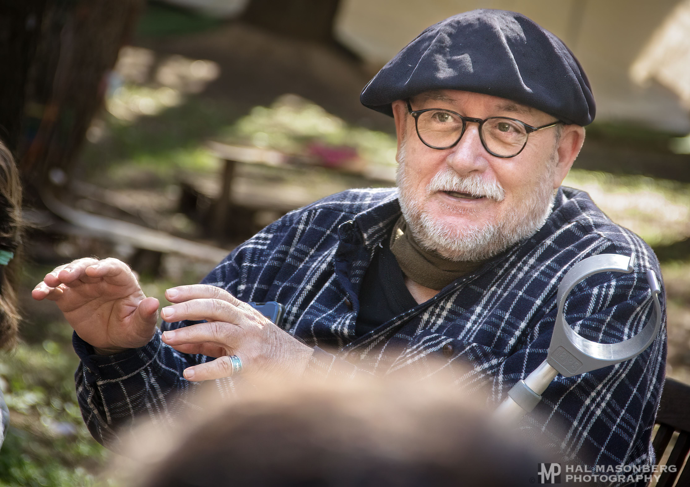
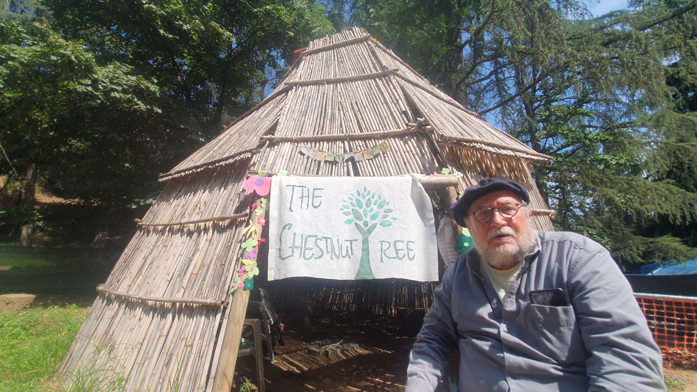
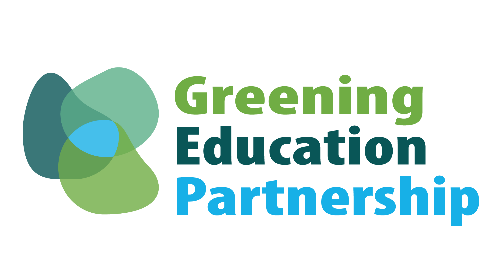
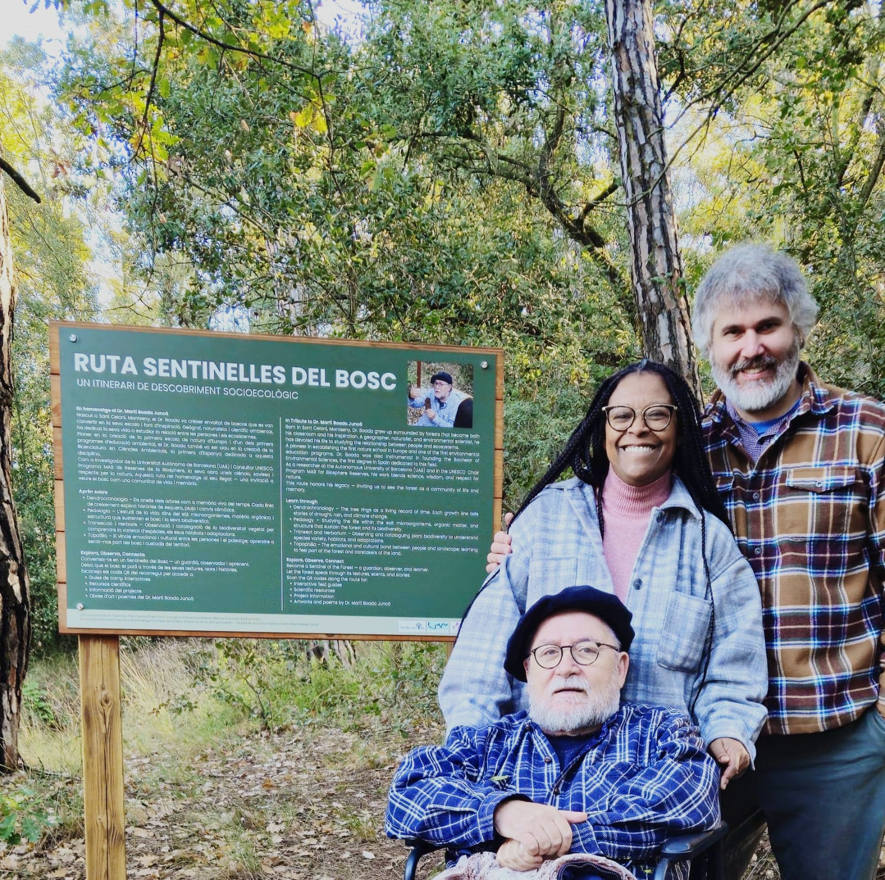

Ruta Sentinelles del Bosc
Dr. Martí Boada's Legacy
An itinerary of socio-ecological discovery, in tribute to Dr. Martí Boada Juncà.

Dr. Martí Boada Juncà, born in Arbúcies and deeply connected to the Montseny massif, is one of Catalonia's most recognised environmental scientists, naturalists, and educators. He has dedicated decades to studying the relationship between human communities and their natural environments — work that spans ecology, geography, culture, and social responsibility.
The Montseny is a UNESCO Biosphere Reserve and one of the ecologically richest landscapes on the Iberian Peninsula, where Mediterranean and Central European ecosystems meet. Dr. Boada Juncà has been a mentor of The Chestnut Tree since 2022, and the school has developed Ruta Sentinelles del Bosc ("Route of the Forest Sentinels") in his honour — an on-campus interpretive trail inviting students and visitors to see the forest as a community of life and memory.
"El bosc no és un lloc que visitem — és part de qui som."— "The forest is not a place we visit — it's part of who we are." A project of The Chestnut Tree Socio-Ecological School, founded by Mercia Silva & Camille Eichmann, in collaboration with Casa de Colònies Mogent.

Learn through the route
Four stations along the trail
- Dendrochronology — tree rings as a living record of time; each growth line tells of drought, rain, and climate change.
- Pedology — studying the life within the soil: microorganisms, organic matter, and the structure that sustains the forest.
- Transect & Herbarium — observing and cataloguing plant biodiversity to understand species, habitats, and adaptations.
- Topophilia — the emotional and cultural bond between people and landscape; learning to feel part of the forest.
Along the trail, QR codes link to interactive field guides, scientific resources, project information, and artworks and poems by Dr. Martí Boada Juncà.
Why "The Chestnut Tree"
Named after the tree that shaped this landscape
The School takes its name from the chestnut tree — the castanyer — which has been central to the economy, diet, and culture of the Montseny for centuries. Chestnuts fed communities through winter, shaped the forest, and gave rhythm to the agricultural year. By naming itself after this tree, the School expresses its intention to be rooted: in place, in season, in community, and in time.
We are not a school that happens to be located in the countryside. We are a school that belongs to this landscape — and that asks children, families, and educators to belong to it too.

Our Socioecological Framework
Four dimensions, in every subject
Our curriculum integrates ecology, sustainability, and human development across all learning — not as separate subjects, but as lenses through which everything connects.
Social
Relationships, community, cooperation, and culture.
Ecological
Soil, water, biodiversity, habitats, and planetary health.
Economic
Resources, food, consumption, work, and responsible use.
Cosmovision
Values, ethics, diversity, and humanity's relationship with the living world.
Our partnership
UNESCO Greening Education Partnership
The Chestnut Tree is a member of the UNESCO Greening Education Partnership. Climate and sustainability thinking is integrated throughout school life through five stages:

Know → Connect
What do we know? What evidence do we have? Why does this matter to us and to this place?
Question → Care
What is changing, and what might explain it? What or who is affected, and what needs attention?
Act
What can we do, and how will we know if it has made a difference?
In his own words & in tribute
Dr. Boada's public talks and collaborations have touched many of the themes this route explores — from forest futures ("Boscos segle XXI, on anem?" with La Rutlla Centre d'Estudis Santboians) to water and the world ("Aigua i Món" with AiguesSabadell) and the relationship between forests and humans (an opening address for Fundació Sèlvans). A poem and music piece, "Quercus," was also created in his honour for the X Setmana del Bosc by Josep Maria Aparicio Olivas.
